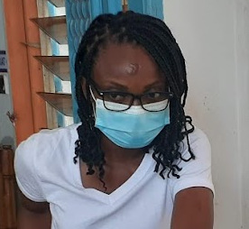

Hi! I am a Ph.D student in molecular microbiology at Institut Pasteur de Côte d’Ivoire, in Abidjan. I was born in Lome, Togo where I did my primary school and college before going to
Maroc at Cadi Ayyad University for an MSc in applied microbiology. The amazing project on assessing the bacteriophage's effectiveness against multiresistant bacteria sent me to Côte d’Ivoire.
I am currently looking for a postdoc!
I am particularly interested in phages. Their biology, their evolution, and their mechanisms. I am also interested in using them as agents against multidrug-resistant bacteria as part of phage therapies.
Addablah, A.Y.A., Kakou-Ngazoa, S., Akpa, E.E., M’Bourou Ndombi, F., Adioumani, E., Koudou, A., Coulibaly N’Golo, D., Kouame Sina, M., Kouassi, S.K., Aoussi, S., Dosso, M., 2021. Investigation of Phages Infecting Escherichia coli Strains B and C, and Enterobacter cloacae in Sewage and Ebrié Lagoon, Côte d’Ivoire. PHAGE 2, 104–111. https://doi.org/10.1089/phage.2020.0047
Addablah, A.A., Kakou-Ngazoa, S., Akpa, E.E., Adioumani, E., Ndombi, F.M., Aoussi, S., Dosso, M., 2021. RAPD-based evaluation revealed genetically diverse populations of Pseudomonas aeruginosa and Staphylococcus aureus lytic bacteriophages isolated in urban sewage and Ebrie Lagoon, Cte dIvoire. AJMR 15, 522–528. https://doi.org/10.5897/AJMR2021.9547
Ebou, A., Koua, D., Addablah, A., Kakou-Ngazoa, S., Dutertre, S., 2021. Combined Proteotranscriptomic-Based Strategy to Discover Novel Antimicrobial Peptides from Cone Snails. Biomedicines 9, 344.https://doi.org/10.3390/biomedicines9040344
Kakou-Ngazoa, E. S., Addablah, A. A., Krylova, K., Saraka, D., Kouassi, K. S., Coulibaly, N. D., Sina, K. M., Aoussi, S., Dozois, C., Dosso, M., 2020. First novel phages from rodents with lytic activity on clinical Enterobacteriaceae strains: Initiation for phage therapy in West Africa. AJMR 14, 280–285. https://doi.org/10.5897/AJMR2020.9329
Koudou, A.A., Kakou-Ngazoa, S., Konan, F.K., Aka, E., Addablah, A., N’Golo, C.D., Kouassi, S., Sina, K.M., Atta, H.D., Guessend, N., Ahoussi, S., Dosso, M., 2020. Occurrence of multidrug-resistant bacteria in aquaculture farms in Cte dIvoire (West Africa). Afr. J. Microbiol. Res. 14, 182–188. https://doi.org/10.5897/AJMR2019.9277
Koudou, A.A., Kakou-Ngazoa, S., Addablah, A., Allali, K.B., Aoussi, S., Atta Diallo, H., Dosso, M., 2020. Biocontrôle de l’infection à Pseudomonas aeruginosa multi-résistant par les bactériophages en aquaculture en Côte d’Ivoire. JABs 154, 15940–15949.https://doi.org/10.35759/JABs.154.10
Ngazoa-Kakou, S., Shao, Y., Rousseau, G.M., Addablah, A.A., Tremblay, D.M., Hutinet, G., Lemire, N., Plante, P.-L., Corbeil, J., Koudou, A., Soro, B.K., Coulibaly, D.N., Aoussi, S., Dosso, M., Moineau, S., 2019. Complete Genome Sequence of Escherichia coli Siphophage BRET. Microbiology Resource Announcements. https://doi.org/10.1128/MRA.01644-18